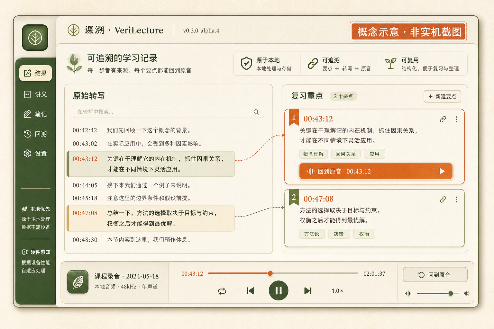

重点讲得太快
Key points move fast
老师讲到考点时，信息一口气涌来，笔记很难同步。
When the lecture reaches an exam cue, notes can struggle to keep up.
Trace every key point back to the lecture.
课溯是一款本地优先桌面应用：把课堂录音变成可追溯的复习重点，并连回原始音频。
A local-first desktop app that turns lecture recordings into traceable review points linked back to source audio.
Alpha 版本用于体验和反馈；真实结果页实机截图将在转写与回听链验收后补充。重要录音请保留备份。 This Alpha is for evaluation and feedback. A real result-screen capture will follow a real transcription and playback check. Keep backups of important recordings.

你遇到的问题
The problem
老师讲到重点和考点时，往往一闪而过，单靠笔记很难完整记下。很多人会先录下来，但环境噪声、距离和多人说话，也可能让转写偏离老师当时的准确表达。
When a teacher reaches a key point or exam cue, the lecture can move faster than notes can keep up. A recording preserves the moment, but noise, distance, and overlapping voices can pull a transcript away from what was actually said.
课溯从原始录音开始：本地转写结合课程材料和专业词库整理重点，需要确认时，仍能回到老师当时说的原音。重点不是终点，能核对才有用。
VeriLecture starts from the original audio: local transcription, course material, and subject vocabulary organize the points while the source remains available for review. A point is useful when it can still be checked.
从现场到重点 From the room to the points
老师讲到考点时，信息一口气涌来，笔记很难同步。
When the lecture reaches an exam cue, notes can struggle to keep up.
环境噪声、距离和多人说话，可能让转写偏离原意。
Noise, distance, and overlapping voices can pull a transcript away from the source.
整理结果连回时间点，确认时不必凭记忆猜。
Review points stay linked to their timestamps for a confident check.
工作方式
How it works
从录音到原音，五步完成一次课堂整理；每一步都留下可回看的记录。
Five steps move from recording to source audio, with a record of what happened at each step.
WAV、MP3、M4A 都可以。
WAV, MP3, and M4A are supported.
先走本地路径，原始文字单独保存。
Use the local path first and save the raw text separately.
用教材和词库检查专业词。
Use the textbook and lexicon to check specialized terms.
把老师明确说的内容与推测分开。
Keep explicit teacher statements separate from inference.
从重点直接跳到对应时间点。
Jump from a point to its timestamp.
可追溯性
Traceability
课溯不会只给一个结论。原始内容、修正版本和课堂重点各自留存；重点带着转写片段和时间点，需要确认时回到对应原音。
VeriLecture does not leave you with a conclusion alone. The source, revised versions, and review points stay connected; each point keeps its transcript evidence and timestamp for a return to the audio.
原始音频和原始转写始终保留。修正与编辑会生成新的版本。
Original audio and raw transcripts stay intact. Corrections and edits create new versions.
明确考点、不考内容、重复强调和系统推测分别呈现。
Exam points, exclusions, repeated emphasis, and system inference stay separate.
音频、转写或教材片段发送前，会先说明内容和用途。
Before audio, transcripts, or excerpts leave the device, you see what is sent and why.
产品路径
Product tour
第一张是明确标注的结果页概念示意，用来解释信息层级；后面三张是仓库里已经存在的真实界面。真实结果页实机截图仍待转写与回听验收。
The first image is a clearly labelled result concept that explains the information hierarchy; the next three are real screens already in the repository. A real result capture still depends on an accepted transcription and playback trace.

当前结果图是概念示意（非实机截图）；真实结果页仍待 Windows x64 转写与回听验收。查看补图要求。 The current result image is a concept mockup, not a real capture; the real result view still needs Windows x64 transcription and playback acceptance. Read the capture brief.
音频、原始转写和课程文件默认留在你的电脑上。需要云端处理时，课溯先说明发送什么、为什么发送。
Audio, raw transcripts, and course files stay on your computer by default. If a cloud step is needed, VeriLecture shows what is sent and why.
查看隐私与安全 Read privacy and security本地转写不会上传音频，课程文件先在本机解析。
Local transcription does not upload audio. Course files are parsed locally first.
音频、转写和教材片段分别记录授权，不用一项模糊同意代替。
Audio, transcripts, and excerpts have separate consent records.
分析失败或修改结果时，原始音频和转写保持不变。
If analysis fails or a result changes, the original audio and transcript stay intact.
从下一堂课开始
Begin with your next lecture
选择平台，直接下载当前 Release：v0.3.0-alpha.4。 Choose a platform to download the current Release: v0.3.0-alpha.4.
当前可下载：Windows x64、Linux AppImage 与 macOS DMG。 Available now: Windows x64, Linux AppImage, and macOS DMG.